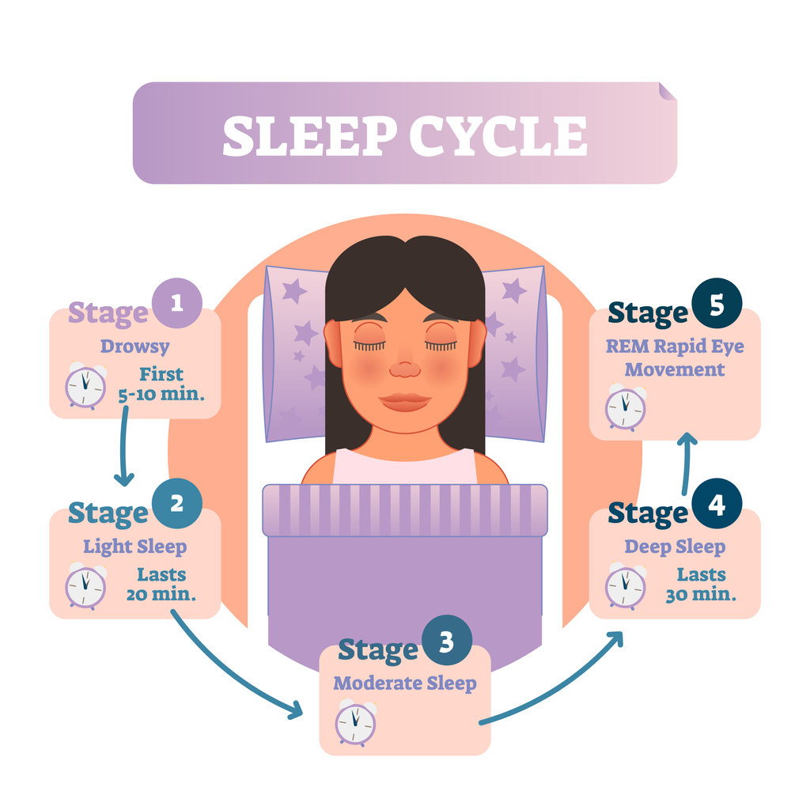

Why Power Naps Make You Groggy (And How to Fix It)

I used to set a thirty-minute nap alarm. I always woke up worse. Stupid, right?
This was back in grad school. I'd come home at 3 PM, brain fried from running experiments, and I'd think "I'll just close my eyes for half an hour." I'd set my phone, lie down on the couch, and wait. Thirty minutes later, the alarm would go off, and I'd feel like someone had replaced my blood with concrete. My head would throb. I'd be irritable. I'd snap at my then-boyfriend — now husband — for asking what I wanted for dinner. He learned to just order pizza and leave me alone for forty-five minutes.
I thought power naps just weren't for me. I thought I was broken. Then I learned the biology, and I realized I was just doing it wrong.
Here's what's happening. A sleep cycle is about ninety minutes. The first twenty to thirty minutes are light sleep. Then you transition into deep sleep. If you set a thirty-minute alarm, you're not waking up after thirty minutes of sleep — you're waking up after about twenty-five minutes of actual sleep, because it takes five to ten minutes to fall asleep. That twenty-five minutes puts you right at the edge of deep sleep, or already in it. So you're yanking your brain out of deep sleep. That's sleep inertia. It feels terrible because it is terrible.
The fix is simple: nap for twenty minutes, not thirty. But not twenty minutes on the clock — twenty minutes of actual sleep. You need to account for how long it takes you to fall asleep. If you take ten minutes to fall asleep, set a thirty-minute alarm. If you take five minutes, set a twenty-five-minute alarm. If you fall asleep instantly — I envy you — set a twenty-minute alarm.
I learned this from a woman named Elena. Elena was a lawyer in Denver. She worked brutal hours and relied on naps to get through the afternoon. But she was always groggy after her naps, sometimes for an hour. She thought she had a medical problem. I asked her to time how long it took her to fall asleep. She said "about fifteen minutes." I told her to set her nap alarm for thirty-five minutes — fifteen to fall asleep, twenty of actual sleep. She tried it. She texted me: "I woke up and I wasn't angry. Is that normal?" Yes, Elena. That's normal.
So here's the rule. First, figure out your personal "nap latency." Time how long it takes you to fall asleep during the day. Do this for three separate naps. Average the numbers. That's your latency. Then add twenty minutes to that number. That's your nap alarm setting. If you take ten minutes to fall asleep, set a thirty-minute alarm. If you take fifteen minutes, set a thirty-five-minute alarm. If you take five minutes, set a twenty-five-minute alarm.
But there's a catch. This only works if you're napping in the right window. Naps taken after 3 PM can still cause grogginess even if the timing is perfect, because your circadian rhythm is starting to wind down and you might slip into deep sleep faster. The best nap window is between 1 PM and 3 PM. That's the post-lunch dip. Naps outside that window are riskier.
A guy named Tom insisted on napping at 5 PM. He said it was the only time he had free. He used the twenty-minute rule perfectly. Still woke up groggy. Why? Because his body was already producing melatonin for the evening. The 5 PM nap was hitting his deep sleep within ten minutes, not twenty. So his thirty-minute alarm — ten min latency plus twenty — was actually waking him from deep sleep. He switched to a 4 PM nap window by shifting his schedule. Problem solved.
You can use the nap planner to do this math for you.
The nap planner asks for your fatigue level and what time you need to be alert. It then tells you whether to nap now, later, or not at all. It also accounts for your likely nap latency based on your fatigue level. If you're really tired, you'll fall asleep faster, so the nap should be shorter. If you're mildly tired, you'll take longer to fall asleep, so the nap should be longer. The planner handles that.
Now, let me tell you about the worst nap of my life. It was 2018, I was pregnant with Leo, and I was exhausted all the time. I decided to take a ninety-minute nap — a full cycle. Perfect, right? I set the alarm for ninety minutes. I fell asleep quickly. But I made a critical mistake: I didn't account for the fact that I was sleep-deprived. My body went into deep sleep almost immediately. By the time ninety minutes passed, I had been in deep sleep for about fifty minutes. That's not a complete cycle — that's deep sleep overdose. I woke up disoriented, nauseous, and convinced I had missed an entire day. I cried. My husband thought something was wrong with the baby. I had to explain that I was just a nap failure.
The lesson: when you're severely sleep-deprived, long naps are dangerous. Stick to twenty-minute naps until you've paid down your debt. Because your sleep architecture is abnormal when you're in debt — your brain will prioritize deep sleep over everything else, even if that means skipping REM and light sleep. A ninety-minute nap when you're exhausted will be mostly deep sleep, not a balanced cycle. You'll wake up feeling like you've been hit by a truck.
If you want to check your sleep debt before napping, use the debt tracker.
If your debt is more than five hours for the week, don't take ninety-minute naps. Stick to twenty minutes. Once your debt is under control, you can experiment with longer naps.
Another thing that causes nap grogginess: the alarm sound. I've said this before, but it's worth repeating. A jarring, loud alarm spikes your cortisol. That makes you feel anxious and disoriented, even if you wake up at the right time. Use a gentle, rising alarm. Something that sounds like a harp or a soft bell. I use "Silk" on my iPhone. Some people use vibration only. The goal is to ease into wakefulness, not to be yanked out.
A woman named Lisa used the default "Radar" alarm for her naps. She said she woke up "ready to punch a wall." I told her to switch to a gentle alarm. She chose "Twinkle." She said it made her feel like a Disney princess waking up in a meadow. Her grogginess dropped by half. That's not placebo. That's biology.
Let's talk about the coffee nap again, because people love this hack. Drink a cup of coffee right before a twenty-minute nap. The caffeine takes about twenty minutes to kick in. So you wake up with the benefits of the nap plus a caffeine jolt. It works. But you have to drink the coffee quickly, which can be uncomfortable. And if you're sensitive to caffeine, it might make your heart race during the nap attempt. I prefer to just nap and then have coffee after. But if you're desperate — like, driving-long-distance desperate — the coffee nap is legit.
There's a study from Japan — 2008, I think — where truck drivers who did the coffee nap had fifty percent fewer lane departures than drivers who only drank coffee or only napped. That's a huge effect. So if you're about to drive for three hours and you're tired, do the coffee nap. Just don't do it every day, because your caffeine tolerance will build and the effect will fade.
Now, what about naps for shift workers? That's a whole different animal. If you work nights, your body is fighting its natural rhythm. A twenty-minute nap before your shift can help a lot. But timing is critical. Nap too early, and you might not be tired. Nap too late, and you might not be able to fall asleep after work. A woman named Denise was a night nurse. She napped from 9 PM to 9:20 PM before her 10 PM shift. She said it made her feel "almost human." Without the nap, she was a zombie by 3 AM.
If you're a shift worker, use the nap planner but set your "circadian offset" to night mode. The tool has a setting for that.
Finally, let me give you a checklist for a perfect power nap. Dark room. Cool temperature. No phone in hand. Gentle alarm set for your latency plus twenty minutes. Nap before 3 PM. Sit up immediately when the alarm goes off. Drink water. Stand up. Walk around. Don't just lie there "waking up slowly" — that leads to more grogginess. Get vertical.
I also recommend using the sleep cycle calculator to check if your nap time aligns with your natural rhythm. Sometimes grogginess isn't from the nap length — it's from napping at a time when your body expects to be awake.
The cycle calculator is for overnight sleep, but the same principle applies to naps. If you nap at a time that falls in the middle of your natural afternoon dip, you'll have a better nap. If you nap during your circadian "forbidden zone" — usually around 7 PM for most people — you'll struggle.
So here's the takeaway. Power naps are great. But they only work if you do them right. Twenty actual minutes of sleep. Right timing. Gentle alarm. Sit up immediately. Don't be like old me, setting a thirty-minute alarm and waking up angry. That's not a power nap. That's a self-inflicted wound.
P.S. Elena, the lawyer I mentioned, sent me a message after a month of proper napping. She said "I used to drink three cups of coffee in the afternoon. Now I have one. My husband says I'm less of a nightmare." That's not a scientific outcome, but it's a human one.